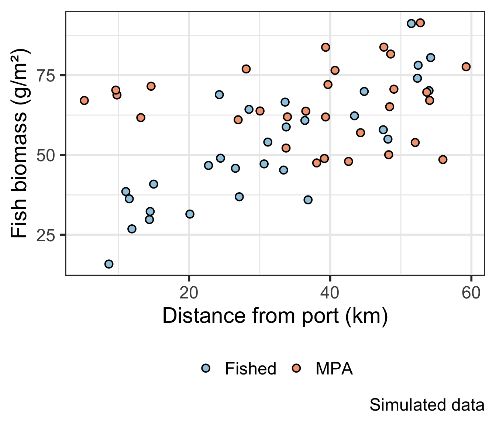
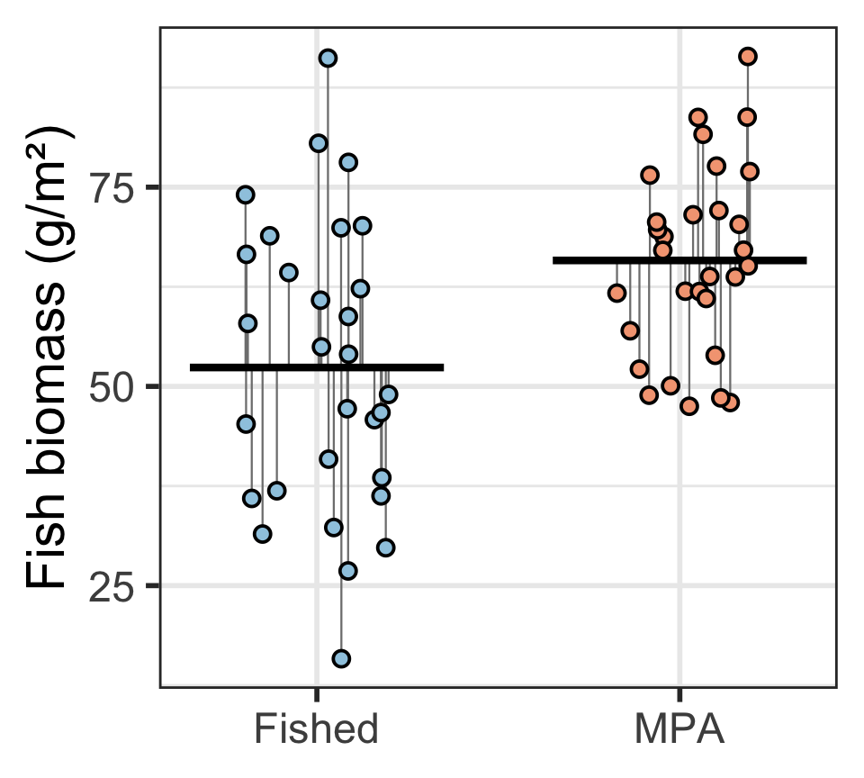
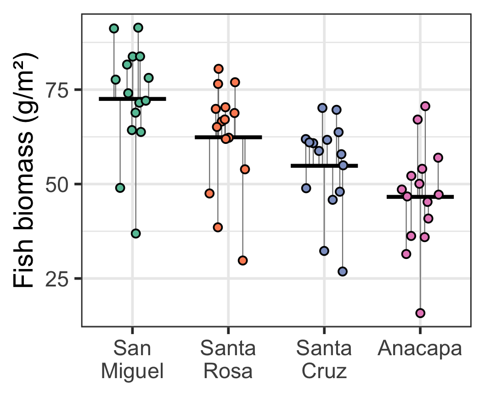
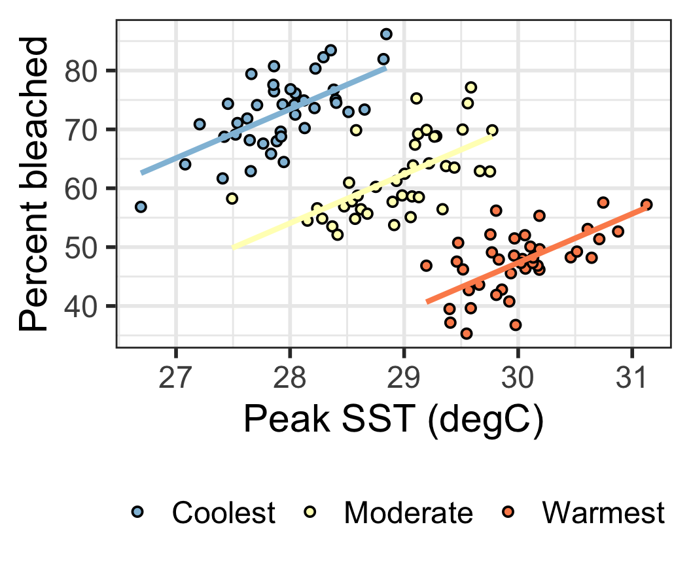
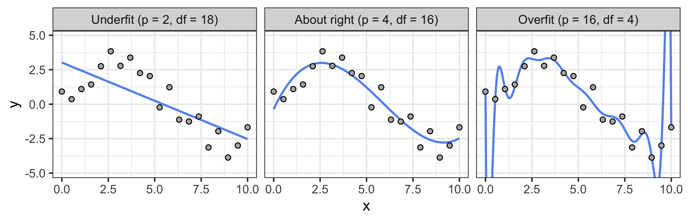
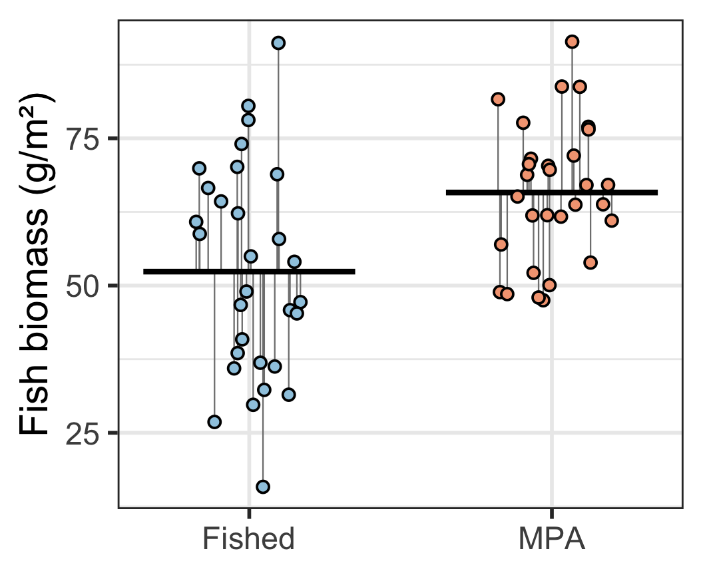
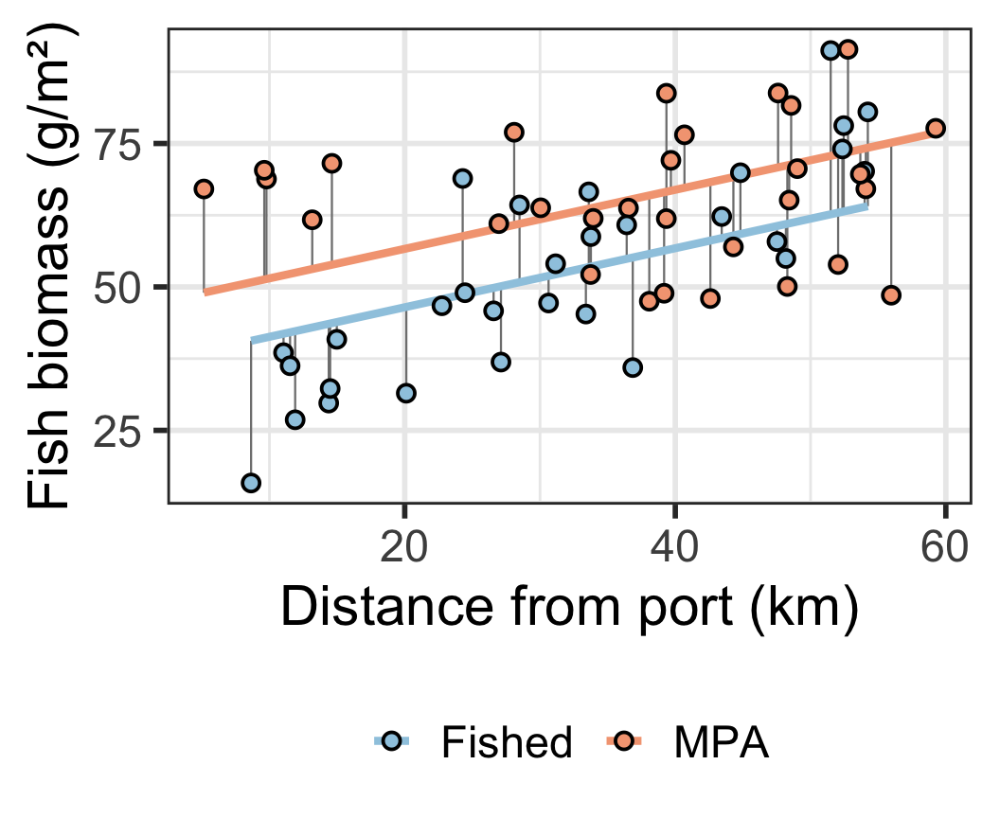
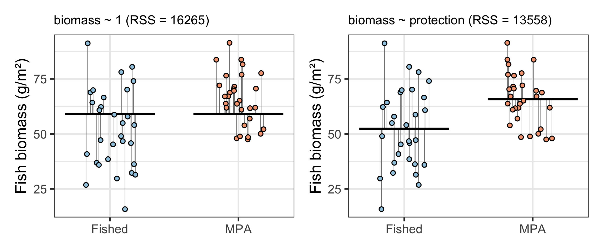
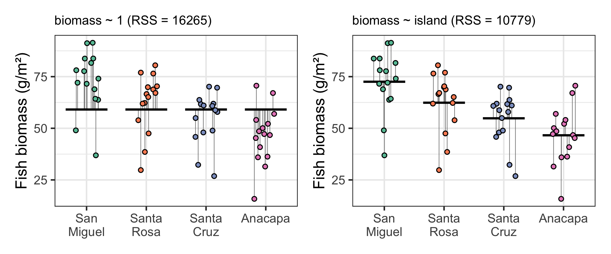
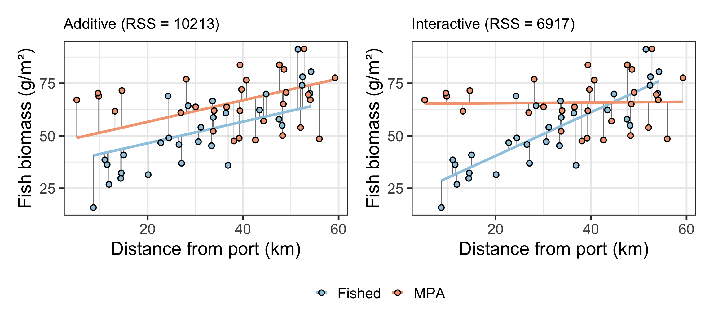

Week 6 Monday: Comparing models
More complex models have benefits: they explain more variation.
But they have costs: they spend more information.
Bonus: some of the most widely used statistical tests (t-test, ANOVA) are just comparisons between linear models of different complexity.

Divers surveyed fish biomass at 60 kelp forest sites around the Channel Islands.
biomass: fish biomass (g/m²)protection: Fished or MPAisland: San Miguel, Santa Rosa, Santa Cruz, or Anacapadist_port_km: distance from port (km)Category levels are text. You can’t multiply a coefficient by a word!
So we convert categories to dummy variables:
\(k\) category levels get \(k - 1\) dummy variables.
| island | Santa Rosa | Santa Cruz | Anacapa |
|---|---|---|---|
| San Miguel | 0 | 0 | 0 |
| Santa Rosa | 1 | 0 | 0 |
| Santa Cruz | 0 | 1 | 0 |
| Anacapa | 0 | 0 | 1 |
| San Miguel | 0 | 0 | 0 |
| Santa Rosa | 1 | 0 | 0 |
San Miguel is the reference level. It doesn’t need its own dummy: when all three dummies are 0, it has to be San Miguel.
\[ \text{biomass} = 52.4 + 13.4 \cdot \text{MPA} + \varepsilon \]

\(\beta_0\) is the mean of the reference level (Fished). \(\beta_1\) is the difference between MPA and Fished.
\[ \text{biomass} = 72.5 - 10.2 \cdot \text{SantaRosa} - 17.7 \cdot \text{SantaCruz} - 25.9 \cdot \text{Anacapa} + \varepsilon \]

lm(biomass ~ island)
Coefficients:
Estimate Std. Error t value Pr(>|t|)
(Intercept) 72.538 3.582 20.249 < 2e-16
islandSanta Rosa -10.156 5.066 -2.005 0.049836
islandSanta Cruz -17.706 5.066 -3.495 0.000935
islandAnacapa -25.934 5.066 -5.119 3.9e-06
Residual standard error: 13.87 on 56 degrees of freedom
F-statistic: 9.5 on 3 and 56 DF, p-value: 3.608e-05\(\beta_0\) is the mean of the reference level (San Miguel). Each other coefficient is a difference from San Miguel.
\[ \text{bleached} = -159.5 + 8.3 \cdot \text{SST} - 19.4 \cdot \text{Moderate} - 42.7 \cdot \text{Warmest} + \varepsilon \]

lm(percent_bleached ~ peak_sst + region)
Coefficients:
Estimate Std. Error t value Pr(>|t|)
(Intercept) -159.4792 26.5348 -6.010 2.19e-08
peak_sst 8.3186 0.9499 8.757 1.91e-14
regionModerate -19.3726 1.4396 -13.457 < 2e-16
regionWarmest -42.7263 2.2512 -18.979 < 2e-16
Residual standard error: 4.767 on 116 degrees of freedom
F-statistic: 215.5 on 3 and 116 DF, p-value: < 2.2e-16Remember the coral reefs? One continuous predictor (peak SST) plus a 3-level category (region): three parallel lines.
Data gives us information. Each observation is one unit.
Parameters of a model spend that information. Each coefficient costs one unit.
The difference between the two is our degrees of freedom:
\[ df = n - p \]
\(n\) is the number of observations and \(p\) is the number of parameters (including the intercept!).
More parameters spend df to improve fit.

Every parameter has to earn its df.
\[ \text{biomass} = 52.4 + 13.4 \cdot \text{MPA} + \varepsilon \]

Check summary(): “Residual standard error: 15.29 on 58 degrees of freedom”
\[ \text{biomass} = 36.2 + 10.2 \cdot \text{MPA} + 0.5 \cdot \text{dist} + \varepsilon \]

We spent one more df on distance from port. Was it worth it?
| Model | p | df | RSS | RSS / df |
|---|---|---|---|---|
| biomass ~ protection | 2 | 58 | 13558 | 234 |
| biomass ~ protection + dist_port_km | 3 | 57 | 10213 | 179 |
But how much of a drop is enough? We need a test statistic.
Adding a parameter explains more, but at a cost.
The benefit
Smaller residuals, more variation explained.
The cost
Spent degrees of freedom. Each parameter has less information behind it.
\[ F = \frac{(RSS_{simple} - RSS_{complex}) \;/\; (p_{complex} - p_{simple})}{RSS_{complex} \;/\; (n - p_{complex})} \]
If the extra parameters are really all 0 (the null hypothesis), \(F\) follows an F distribution. That gives us a p-value.

Compare an intercept-only model (one mean for every site) to a two-category model (one mean per group).
\[ F = \frac{(16{,}265 - 13{,}558) \;/\; (2 - 1)}{13{,}558 \;/\; (60 - 2)} = 11.58 \]
Do the two categories explain enough variation to justify the cost? Yes (p = 0.0012).
Two Sample t-test
data: biomass by protection
t = -3.4032, df = 58, p-value = 0.001213
alternative hypothesis: true difference in means between group Fished and group MPA is not equal to 0
95 percent confidence interval:
-21.336482 -5.532399
sample estimates:
mean in group Fished mean in group MPA
52.37154 65.80598 Same p-value. And \(t^2 = (-3.403)^2 = 11.58 = F\).
A (two-sample) t-test is a comparison between an intercept-only model and a two-category model.

Compare an intercept-only model to a four-category model. The complex model spends 3 more df.
\[ F = \frac{(16{,}265 - 10{,}779) \;/\; (4 - 1)}{10{,}779 \;/\; (60 - 4)} = 9.5 \]
Does island explain enough variation to justify the cost? Yes (p = 3.6^{-5}).
Same F, same p-value.
A (one-way) ANOVA is a comparison between an intercept-only model and a model with a 3+ category predictor.
ANOVA asks: is at least one group mean different? Not which one.

Compare an additive model (parallel lines) to an interactive model (slopes vary). The complex model spends 1 more df.
\[ F = \frac{(10{,}213 - 6{,}917) \;/\; (4 - 3)}{6{,}917 \;/\; (60 - 4)} = 26.69 \]
Does the interaction explain enough variation to justify the cost? Yes (p = 3.3^{-6}).
When the models differ by one parameter, the F-test matches the t-test on that coefficient in summary().
\(t^2 = (-5.167)^2 = 26.69 = F\)
The F-test generalizes: it can test many parameters at once.